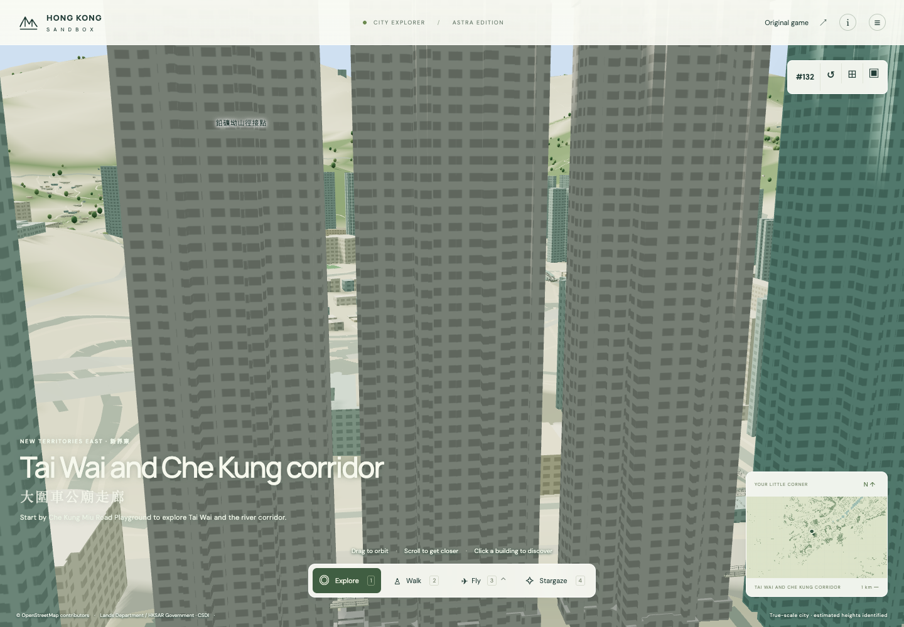
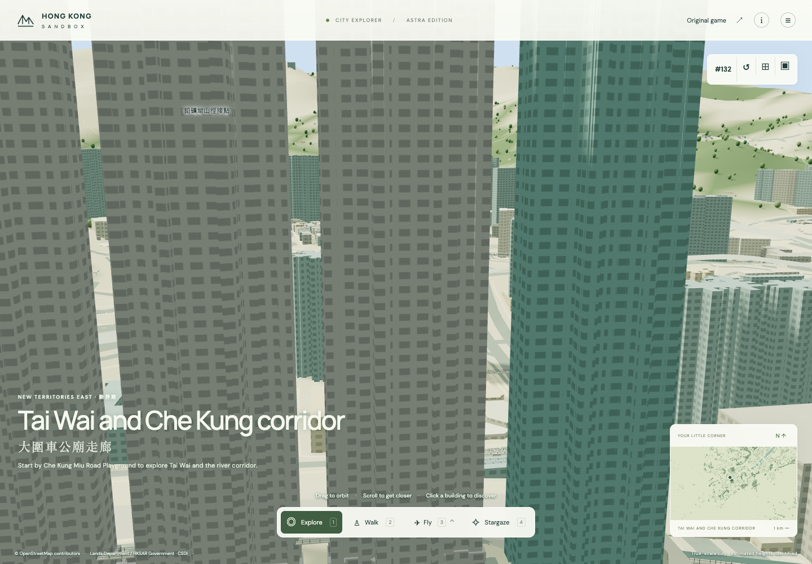
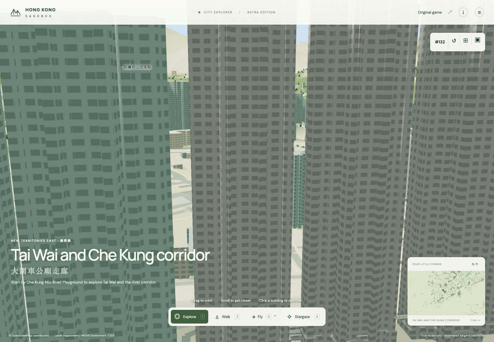
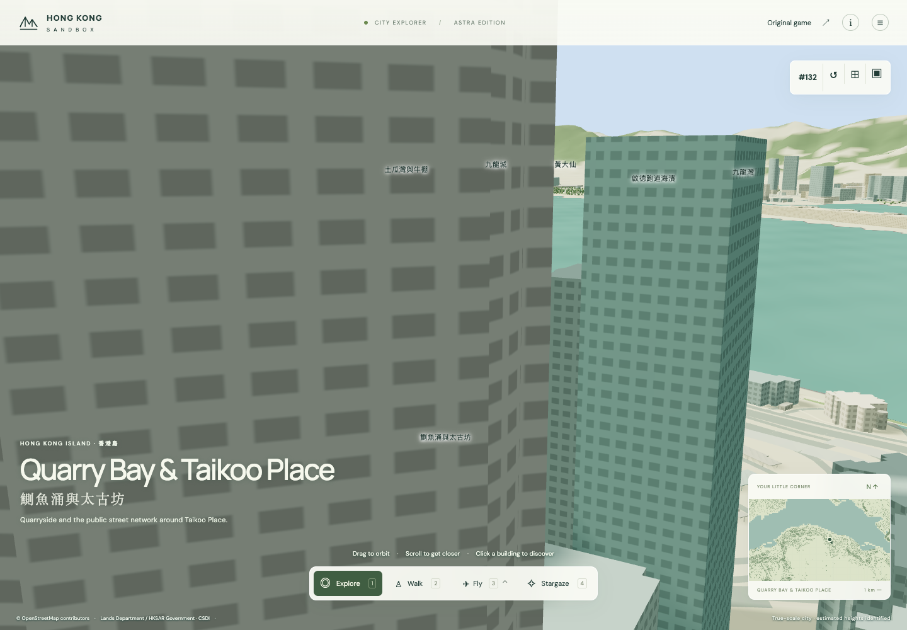
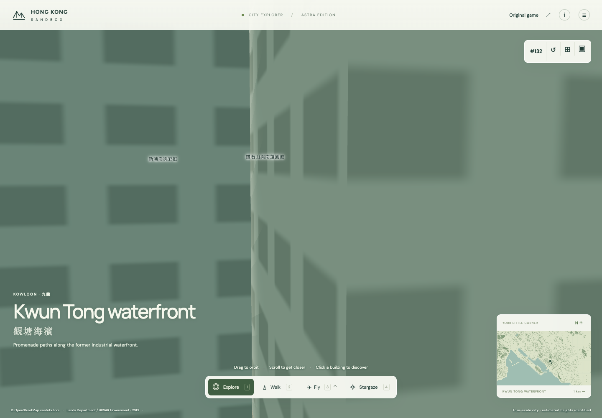
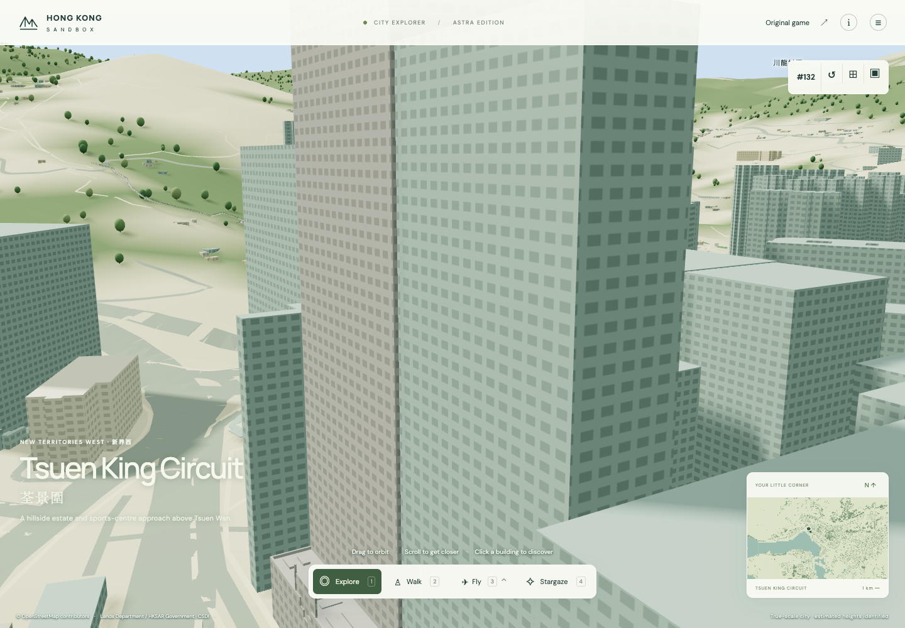

<!doctype html><meta charset="utf-8"><style>body{margin:15px;font:15px sans-serif;background:#eef1ed}main{display:grid;grid-template-columns:1fr 1fr;gap:10px}figure{margin:0;background:white}img{width:100%;height:345px;object-fit:contain}figcaption{padding:5px}</style><main><figure><figcaption>Festival City III Tower 2 · landsd/251919:0</figcaption></figure><figure><figcaption>Festival City III Tower 3 · landsd/251920:0</figcaption></figure><figure><figcaption>Festival City III Tower 1 · landsd/251925:0</figcaption></figure><figure><figcaption>One Taikoo Place · landsd/272670:0</figcaption></figure><figure><figcaption>AIA KOWLOON TOWER · landsd/311415:0 · landmark membership still proposed</figcaption></figure><figure><figcaption>Cable TV Tower · landsd/335557:0 · landmark membership still proposed</figcaption></figure></main>